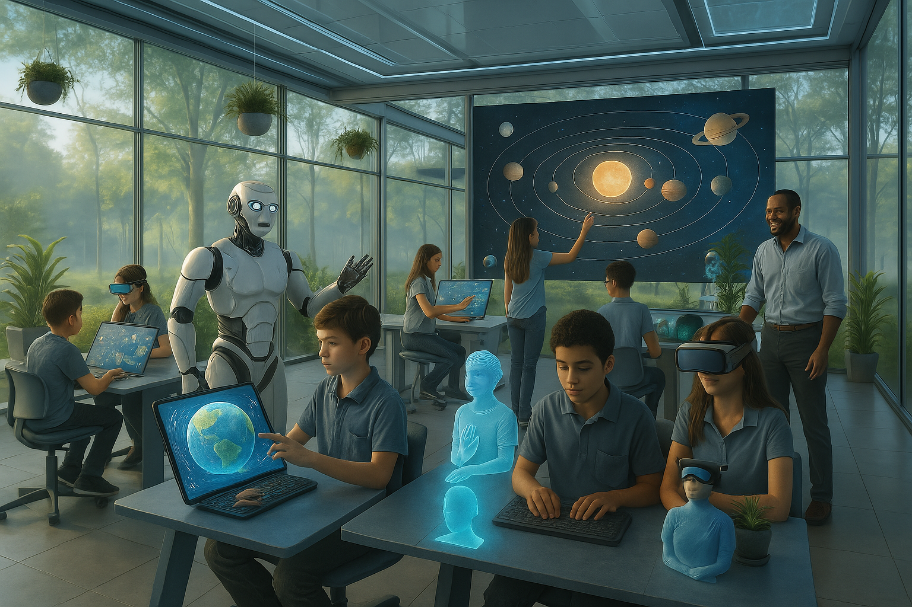

O Futuro da Sala de Aula
As salas de aula do futuro prometem uma revolução no ensino, com tecnologia avançada criando novas formas de aprendizado. Inteligência artificial, hologramas e realidade aumentada tornam a experiência mais imersiva e interativa, preparando os alunos para os desafios de um mundo digital.
Esperança na Educação Rural
Em comunidades rurais, a educação enfrenta desafios únicos, mas também carrega uma esperança renovada. Escolas simples, mas cheias de sonhos, transformam vidas e fortalecem comunidades, mostrando que o conhecimento pode florescer em qualquer lugar, mesmo nas regiões mais afastadas.
Estudantes em Luta por um Ensino Melhor
Em diversas partes do mundo, estudantes se mobilizam em busca de uma educação mais justa e acessível. A voz da juventude ecoa em protestos e manifestações, reivindicando melhorias no ensino, infraestrutura escolar e oportunidades iguais para todos.